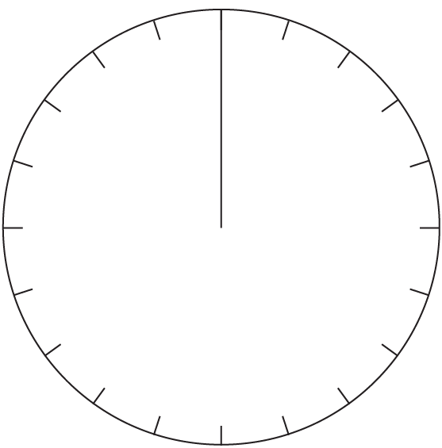
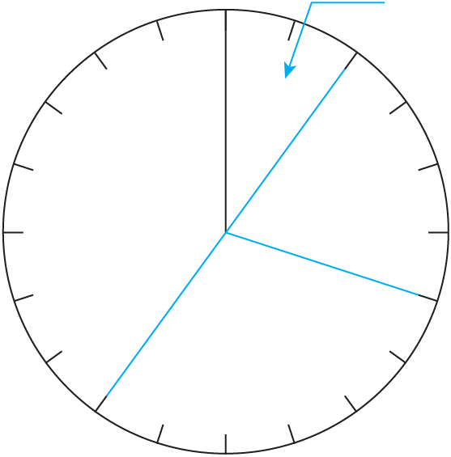

- 물음 1
- 물음 2
-
-
선사관에 있는 시대별 문화재 수
시대 구석기 신석기 청동기 철기 합계 문화재 수(점) 500 1000 1500 2000 5000 백분율(%) 10203040100 -
선사관에 있는 시대별 문화재 수0255075구석기
(10 %)신석기
(20 %)청동기
(30 %)철기
(40 %)
-
-
원그래프를 보고 알 수 있는 내용을 말해 보세요.
예철기 시대의 문화재 수가 가장 많습니다.
예철기 시대의 문화재 수는 신석기 시대 문화재 수의 2배입니다.